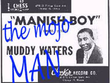

|

Вагоны "только для черных" в
хвосте поезда "Иллинойс-Центральный"
неслись под стук колес сквозь ночь к
нежному свету восхода. В них сидели,
лежали, дремали, развлекали друг друга
разговорами несколько сотен
переселенцев, поставивших все на карту
в надежде устроиться на далеком севере,
где терпимее относятся к людям другого
цвета кожи. Было это в мае 1943 года. В
половине десятого поезд прибыл на
Центральный вокзал Иллинойса на
пересечении 32-й улицы и Мичиган-авеню -
за семнадцать с половиной часов поезд
перенес Мадди в другое измерение. Город
встретил его сиянием миллионов огней,
оглушительным шумом и
неправдоподобной скоростью движения:
"Я слез с поезда и понял, что попал в
самое быстрое место на земле, -
вспоминает он. - Подъезжают и
отъезжают такси, ревут гудки, люди
носятся как сумасшедшие". Однако
Мадди быстро впитает в себя ритмы жизни
большого города, его шумную активность
и хвастливую уверенность в успехе, и
все эти ритмы, чувства, настроения он
позже выразит в музыке, которую ему
предстоит создать.
Мадди махнул таксисту - машина лихо
подкатила к тротуару, потом резко
сорвалась с места и понеслась по городу.
Он дал адрес своей сводной сестры.
Вытягивая шею, Мадди с изумлением
разглядывал небоскребы в северной
части Чикаго - его же путь лежал на юг, в
район кирпичных доходных домов, мимо
заводов, окутанных сероватой дымкой
смога. Такси остановилось перед домом
№ 3536 по Калюмет-авеню; Мадди велел
таксисту подождать, а сам поднялся на
четвертый этаж - там действительно жила
его сестра с мужем, Дэном Джонсом. Мадди
везло, как никогда. В тот же вечер он
устроился грузчиком на упаковочную
фабрику за 45 долларов в неделю. Через
пару недель, сказали ему, он сможет
удвоить эту цифру, работая сверхурочно.
Теперь за два месяца Мадди зарабатывал
больше, чем вся его семья в Миссисипи за
год: "Я целый год собирал хлопок и
не мог вытянуть из них и сотни долларов,
и вдруг - боже ты мой! Полные карманы
денег!" - говорил он.
Уже через два дня на имя Мадди пришла
повестка из призывной комиссии -
очевидно, Фултон, управляющий
плантацией Стоволла, сообщил местным
властям, что Маккинли Морганфилд
переехал в Чикаго. В назначенное время
Мадди явился в здание на углу 13-й улицы
и бульвара Саут-Парк и, к своему
великому облегчению, был освобожден от
военной службы ввиду неграмотности и
слабого зрения.
От одиночества он не страдал: в Чикаго
жили его старые друзья Эдди Бойд и
Скотт Боэннер, а также многочисленные
знакомые и родственники - например,
дядя Джо Брант. Погостив неделю или две
у сестры, Мадди поселился у одного из
своих двоюродных братьев на 13-й улице
Западного района, в доме № 1857. Уже через
полгода он снял по соседству, в доме №
1851, четырехкомнатную квартиру, причем
платил за нее на 23 доллара меньше, чем
брат! Мадди верил, что удача, наконец,
улыбнулась ему.
Южный район Чикаго, где обосновался
Мадди, по праву считался столицей
черной Америки. От вокзала на углу 12-й
улицы и улицы Мичиган он тянулся к югу
на двадцать с лишним километров,
постепенно расширяясь. Это было
компактное, совершенно независимое
образование со своими предприятиями,
магазинами, клубами и отелями. Местная
газета, "The Chicago Defender" защищала
права чернокожих и была популярна не
только в Чикаго, но и на всем
негритянском Юге. Здесь жили
единственный черный конгрессмен США,
Уильям Доусон, и чемпион мира по боксу
Джо Луи. В общем, Южный район казался
сказочной страной, где сбывались даже
самые фантастические мечты.
На протяжении 40-х годов население
Южного и Западного районов Чикаго
выросло почти вдвое: туда хлынул поток
чернокожих переселенцев, мечтавших о
твердой заработной плате и гражданских
правах, в то время как на юге
единственной возможностью выжить
оставался полурабский труд издольщика.
В городе же их охотно брали на военные
заводы и мясокомбинаты, где ощущался
недостаток рабочей силы; впоследствии
профсоюзы этих отраслей будут обладать
реальным политическим влиянием.
Однако за все эти преимущества
приходилось платить огромную цену. В
городе процветали взяточничество,
проституция, азартные игры;
определенной суммы было достаточно,
чтобы представители закона закрыли
глаза на все, что угодно. Хотя мафия
собирала дань со всего города - ее общий
доход составлял около 20 миллионов
долларов в год, - особенно выгодным
считался рэкет в черных кварталах.
Белые жители давно покинули Южный
район из-за вони скотных дворов и шума
железной дороги. Дома, где раньше жили
одна-две белые семьи, теперь были
поделены на десятки крошечных
квартирок, где постоянно выходили из
строя водопровод и отопление, однако и
они не могли вместить всех желающих -
иногда одна и та же кровать сдавалась
троим людям, работающим в разную смену.
Несмотря на такие условия, квартирная
плата здесь была выше, чем где-либо в
городе. Население росло быстро, однако
району было некуда расширяться: его со
всех сторон плотным кольцом охватывали
белые кварталы.
Отношения между белыми и неграми по
сравнению с южными штатами были,
конечно, сильно сглажены, однако без
изменений осталась основа этих
отношений - эксплуатация. Из-за высокой
квартплаты и низких доходов черные
семьи не имели никакого шанса
выбраться из трущоб; практически все
мужчины становились чернорабочими - им
не разрешалось даже водить автобусы
или такси. Корни бытового расизма были
так же сильны, как и на юге: стоило
черной семье нарушить тщательно
оберегаемые границы негритянского
анклава, как полиция вышвыривала ее из
квартиры с применением оружия.
Неудивительно, что в течение всех 40-х
годов волнения в этих районах не
прекращались.
В конце тридцатых в Чикаго родился
новый вид блюза, известный как "Блюберд-бит"
- по названию лейбла, с которым
сотрудничало большинство артистов. Это
был довольно легкий, предельно
приглаженный вариант дельта-блюза,
основной задачей которого было
развлекать и успокаивать людей,
измученных Великой Депрессией. В этой
жизнерадостной музыке не было места
боли и разочарованию, все острые углы
были сглажены в угоду более тонкому
вкусу горожан. Основными
представителями этого направления
были гитаристы Лонни Джонсон, Биг
Билл Брунзи, Биг Джо Уильямс и Хадсон
"Тампа Ред" Вудбридж, пианисты Питер
"Мемфис Слим" Чэтмен и
гармошечник Джон Ли "Санни Бой"
Уильямсон (I). Фронтмену обычно
аккомпанировал состав из пианино,
гитары, контрабаса, ударных и иногда
саксофона.
Чуть позже, уже под влиянием джаза, в
Чикаго сложился стиль под названием "джамп-блюз".
Ко времени приезда Мадди он находился
на пике своей популярности. От
грубоватой искренности Дельты и здесь
осталось немного, основатель этого
стиля Луи Джордан и его последователи:
Бастер Беннет, ансамбль "Chicago All
Stars", Джамп Джексон и Рузвельт Сайкс -
превратили ритм в основную
составляющую своего нового звучания.
Блюзы исполняли и джазмены Нат "Кинг"
Коул, Билли Экстайн и Джонни Мур - их
вещи становились хитами национального
масштаба. На этом фоне репертуар Мадди
Уотерса казался безнадежно устаревшим.
В это время американская индустрия
звукозаписи переживала жесточайший
кризис: в 1942 году, в связи со
вступлением США во II Мировую войну, в
стране были введены ограничения на
использование шеллака. Более того, в
том же году президент Американской
федерации музыкантов Джеймс Петрилло
потребовал полного запрета на
звукозапись, мотивируя это тем, что
живая музыка не выдерживает
конкуренции со стороны радио,
пластинок и музыкальных автоматов.
Этот закон больно ударил по блюзменам-профессионалам,
таким, как Биг Билл Брунзи, Биг Масео и
Тампа Ред - многим из них пришлось
заново искать работу. В 1944 году закон
был отменен, но лимит на шеллак
просуществовал до самого конца войны.
Немного обустроившись в Чикаго, Мадди
стал пытаться проявить себя и как
музыкант. Он начал с того, что играл на
вечеринках у своей сестры и ее друзей;
сестра предупреждала его, что
деревенский блюз давно вышел из моды,
однако Мадди был верен себе и продолжал
исполнять вещи Роберта Джонсона,
Лироя Карра, а также свои собственные.
Он был готов к непониманию и насмешкам:
"Они говорили, что это музыка для
батраков, что я никуда с ней не пробьюсь,
и потешались надо мной, когда я пел блюз".
Мадди хорошо помнил прощальный совет
своего отца: "Если над тобой будут
смеяться, не обращай внимания". "В
этой жизни приходится многое терпеть,
- размышлял он. - И вовсе не
обязательно сразу говорить им всем: вот
он я! Ешьте меня с потрохами!". К
публике он относился философски: если
люди не понимают его музыку, значит, они
пока еще не готовы воспринимать жизнь
такой, как она есть: "Они делали вид,
что проблем не существует". Мадди
так не умел: "Самый лучший способ
справиться с бедой - это посмотреть ей
прямо в глаза, - говорил он. - Для
этого я и пел свой блюз".
Долгое время Мадди держался только за
счет своего упорства и страсти к музыке:
"Я играл потому, что хотел играть, а
не потому, что кто-то меня слушал, -
вспоминает он. - Люди пускали меня к
себе только потому, что я работал за
гроши". Однако его положение
постепенно упрочилось: он стал все чаще
выступать на так называемых "рент-парти"
- вечеринках, которые рабочие
устраивали, чтобы расплатиться за
квартиру. Это был характерный для
черных кварталов вид развлечений:
хозяин выставлял еду и виски, приглашал
музыкантов и брал за это с друзей и
знакомых небольшую входную плату.
Мадди получал внимание публики,
немного денег и столько виски, сколько
мог выпить. Среди гостей нередко
попадались его земляки с юга, и они были
рады послушать музыку, которая
напоминала им о доме.
На одной из таких вечеринок Мадди
впервые в жизни знакомится с известным
музыкантом - Биг Биллом Брунзи,
который в конце тридцатых был признан
самым популярным блюзменом Америки.
Уильям Ли Конли Брунзи родился 26 июня
1893 года в Миссисипи, в городке Скотт. В
детстве он играл на самодельной
скрипке. Вернувшись с Первой мировой,
он поселился в Чикаго, освоил гитару и в
1926 году начал записываться. Брунзи
считался отцом "Блюберд-бита" и
влиятельнейшим блюзменом Чикаго,
поэтому вначале Мадди был даже удивлен
его простотой и дружелюбием: он всегда
находил время перекинуться парой слов
с никому не известным гитаристом. Биг
Билл дал Мадди совет, который тот
запомнит на всю жизнь: ""Играй то,
что умеешь, парень, держись за свою
фишку. Будешь стоять на своем - все у
тебя получится", - так говорил мне
Биг Билл, и с тех пор я почти во всем
стараюсь быть таким, как он". В
другой раз Мадди заметил, что"из
всех, кого я знаю, Биг Билл - самый
лучший".
Вскоре Брунзи привел Мадди к Тампа
Реду, у которого собирались и
джемовали все знаменитые блюзмены
Чикаго: Мемфис Слим, Биг Масео
Мерриуэзер, Питер "Доктор"
Клейтон, Джон Ли "Санни Бой"
Уильямсон, Дж. Т. Браун.
Председательствовал на этих сборищах Лестер
Мелроз - человек, которому лейбл "Блюберд"
был обязан своим успехом. Мадди
очутился в компании людей, которых
раньше знал только по пластинкам, и
порядком нервничал: "Я боялся
сказать лишнее, потому что ужасно хотел
остаться среди них А к ним было не так-то
просто подойти: я для них был всего лишь
щенком".
Добившись успеха, многие зрелые
музыканты начинали относиться к
молодым с неприязнью, но не таков был
Биг Билл: он поддержал Мадди, помог ему
завязать знакомства среди тех, кто
устраивал домашние концерты, и
представил его как подающего надежды
блюзмена в "Sylvio's", самом модном
блюзовом клубе Вест-сайда.
В 1945-м умерла любимая бабушка Мадди, и
он отправился в Стоволл, чтобы уладить
ее дела. "Son Simms Four" все еще
существовали - раз в месяц они играли на
танцах в знаменитом "Риверсайд-отеле";
к ним вернулся Питти Пэт. Однако в конце
сороковых и он, и Луи Форд умерли, и
группа больше не собиралась. В конце
пятидесятых Сан Симмс перенес три
операции на почках (перед самой
последней он сказал жене: "Возьми
мои часы, детка, в этот раз я вряд ли
вернусь"), сделался религиозным
человеком и бросил блюз. Он умер 23
декабря 1958 года и похоронен в
безымянной могиле на кладбище
баптистской церкви "Bell Grove".
Другим известным музыкантом, с
которым у Мадди установились неплохие
отношения, был Санни Бой Уильямсон.
Санни Бой был самым старшим из великих
чикагских мастеров блюзовой гармоники.
Он первый сумел ввести гармошку в
городской блюзовый состав в качестве
основного солирующего инструмента -
возможно, именно под его влиянием Мадди
впоследствии будет так активно ее
пропагандировать. А тогда, вскоре после
знакомства, Санни Бой нанял Мадди и его
друга Эдди Бойда для работы в клубе
на Авеню О в южном Чикаго -
справедливости ради надо отметить, что
их таланты тут были не при чем: дело
было в машине, которой Мадди обзавелся,
получив наследство от Мисс Деллы.
Неумеренная страсть Санни Боя к
спиртному нередко приводила к тому, что
под конец вечера группа оставалась без
фронтмена. Однажды он в очередной раз
отключился где-то за сценой, а у Эдди
пропал голос - пришло время и Мадди
Уотерсу показать публике, что он умеет
петь блюз. Он запел "Trouble, Trouble" Лоуэлла
Фалсона, и толпа разразилась криками
одобрения. Вдруг Санни Бой очнулся и
потянулся к микрофону, но в зале
закричали: "Мадди Уотерс!". Как бы
то ни было, хозяину очень скоро надоели
пьяные выходки Санни Боя, и он уволил
всех троих. Вскоре после того, как Мадди
вернулся в Чикаго, его двоюродный брат
Джесси Джонс познакомил его с одним из
своих друзей - по мнению Джесси, у них
были схожие музыкальные интересы. Этот
человек родился 3 июня 1924 года в городке
Рулвилль, в 60 километрах к югу от
Кларксдэйла; детство его прошло в
штатах Миссисипи, Джорджия, Миссури и
Тенесси. Первые семь лет своей жизни он
звался Джимми Лэйн, а потом его мать
вторично вышла замуж, и Джимми
принял фамилию отчима - Роджерс.
Подростком он с восхищением слушал
пластинки Санни Бой Уильямсона, и его
первым инструментом стала гармошка. В
Вэнсе, штат Миссисипи, он некоторое
время учился в одной школе со Снуки
Прайором; они организовали
гармошечный дуэт и выступали в
сопровождении группы. Позже они
встретятся в Чикаго, где Снуки первым
из всех гармошечников освоит комбик и
микрофон.
С 10 или 11 лет Джимми учится играть и на
гитаре. Как и многие другие гитаристы
Дельты, он начинал с проволоки,
натянутой на стену; первые аккорды ему
показал Артур Джонсон, дядя гитариста Лютера
"Гитар Джуниор" Джонсона,
впоследствии тоже игравшего с Мадди.
Его любимыми гитаристами были Биг
Билл Брунзи - позже Джимми
познакомится и даже подружится с ним - и
Джо Вилли Вилкинс из "King Biscuit Boys".
Джимми так обожал передачу "King Biscuit
Time", что решил переехать в Хелену,
откуда она транслировалась. Там ему
один раз удалось поджемовать с самими
"King Biscuit Boys": Джо Вилли уступил ему
свою гитару, и Джимми первый раз в жизни
играл с подзвучкой. Позже он отправился
путешествовать, побывал в Мемфисе и
Сент-Луисе, а потом и в Чикаго, но не
остался там, а вернулся в Хелену, где
лидер "King Biscuit Boys" Санни Бой
Уильямсон-второй (Райс Миллер) и их
слайд-гитарист Роберт Найтхок иногда
приглашали его на вторую гитару. В 1944
году, когда Джимми, наконец, приехал в
Чикаго, он уже был довольно опытным
музыкантом.
Джимми поселился в Южном районе и
работал то на мясокомбинате, то на
обувной фабрике, то на стройке, а
свободное время отдавал музыке. Он
продолжал заниматься гармошкой - у него
уже был свой собственный звук, мягкий и
серебристый - и часто проводил вечера в
клубах, где выступал Санни Бой
Уильямсон, в надежде показать себя,
если тот напьется и не сможет играть.
Однако его основным инструментом все-таки
была гитара. Он обзавелся комбиком
фирмы "Гибсон" и звукоснимателем
"Де Армонд", но играл пока только
на вечеринках и на улице с гитаристами
Клодом "Блю Смитти" Смитом и
Джоном Генри Барби и гармошечником
Джоном Томасом Ренчером. Если им и
удавалось вписаться в какой-нибудь
клуб, деньги для них собирались в шляпу
с посетителей. Однако вскоре Джимми
отыграл и свой первый настоящий
концерт: он аккомпанировал на гитаре и
гармошке блюзовому пианисту Альберту
"Саннилэнд Слиму" Луэндрю.
Примерно в это же время Джимми
знакомится с любителем блюза по имени
Джесси Джонс: завидев его на улице с
гитарой, тот всегда останавливался
послушать и угощал его виски. Вскоре
Джонс устроил его на фабрику
радиоприемников, где работал сам, а
позже познакомил со своим двоюродным
братом, Мадди Уотерсом. Они моментально
сдружились и, разумеется, решили
сотрудничать: предполагалось, что
Мадди будет играть на гитаре, а Джимми -
на гармошке. Джимми нашел, что звук у
Мадди слишком "скромный":
Мадди обычно упражнялся в одиночестве,
тогда как Роджерс привык играть громко,
чтобы выделяться в составе. Сам Мадди
тоже стремился к более объемному звуку.
Еще их объединяла любовь к слайд-гитаре
в стиле Роберта Джонсона - в общем, они
великолепно подходили друг другу.
Мадди, Джимми и пианист Литтл Джонни
Джонс иногда появлялись и на джемах у
Тампа Реда; Джимми вспоминает, что
Мадди плохо вписывался в тамошнюю
компанию: он держался застенчиво и не
общался ни с кем, кроме самых близких
друзей. Он и сам признавался, что
чувствовал себя неловко в обществе
столь прославленных артистов, к тому же
он играл совершенно другую музыку, так
что не особенно стремился сближаться с
ними. Тампа Ред жил неподалеку от парка,
где проводились бейсбольные матчи, и
нередко вместо того, чтобы участвовать
в джеме, Мадди убегал поболеть за свою
любимую команду - "White Sox": его не
смущало, что она всегда плелась в самом
хвосте лиги, и он на всю жизнь остался
ей верен.
|